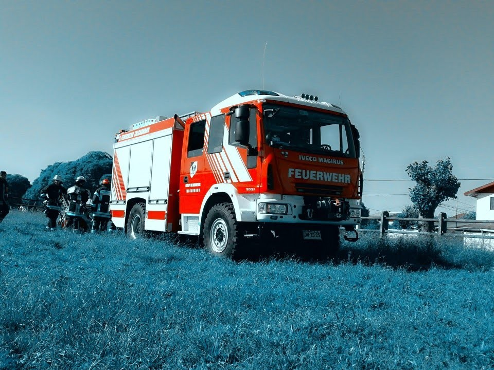

Unidad mixta de incendio y rescate Iveco Magirus HLF 30/25 4×4, adquirida en 2012, con gran capacidad de prestaciones y de almacenamiento de equipos.
Ya no forma parte de las unidades en servicio de la Quinta.
Descripción de la unidad
- Multipropósito (incendio y rescate), con gran capacidad de almacenamiento de equipos.
- Un solo fabricante, con prestigio y respaldo técnico.
- Mejora en tecnología y en seguridad del personal.
- Versátil para la configuración urbana, la topografía y la infraestructura vial de Talcahuano.
Características de la unidad
- Chasis Iveco FF150E30W, Euro 5, cabina 1+8, configuración AF3.
- Motor diésel de 6 cilindros, turbocargado e interenfriado, de 299 HP.
- Caja de transmisión Allison automática de 6 velocidades, con retardador.
- Tres circuitos de frenos independientes (ABS) y frenado en los dos puentes.
- Calentador de filtro de combustible.
- Neumáticos Michelin XZL 395-85 R20.
- Tracción permanente en las 4 ruedas (All Wheel Drive).
- Carrocería Magirus AluFire 3 (H)LF 30/25, con tratamiento anticorrosión para ambiente salino.
- Bomba centrífuga combinada FPN 10-3000 + FPH 40-400 de alta y baja presión (MPH 230 AN), controlada desde la cabina.
- Estanque de fibra de vidrio reforzado, de 2.500 litros de agua.
- Sistema de inductor automático de agua Magirus AWZ.
- Almacenaje de 4 equipos de respiración autónoma, más 4 en cajoneras.
- 6 compartimientos con apertura lateral, cerrados por cortinas de aluminio.
- Cofre en el techo para tablas de inmovilización y sistema de almacenamiento de escalas.
- Huinche eléctrico Warn de 5 toneladas.
- 2 portamangueras móviles traseros con soporte Barth.
- Pitón monitor portátil agua/espuma Alco HH 365 (1.600 litros por minuto a 8 bar, chorro de 61 metros).
- Mástil de iluminación telescópico y neumático, con control remoto de giro y dirección de las luminarias.
- Grupo electrógeno Endress ESE845 DGB ES DIN trifásico de 8 kVA.
- Luces de xenón integradas para desplazarse en condiciones climáticas adversas.
- Iluminación Hella en cajoneras y compartimientos, y dos balizas Teklite de 1000 W.
- Luces de redirección y advertencia para el tráfico.
- Intercomunicadores entre cabina, bomba y monitor.